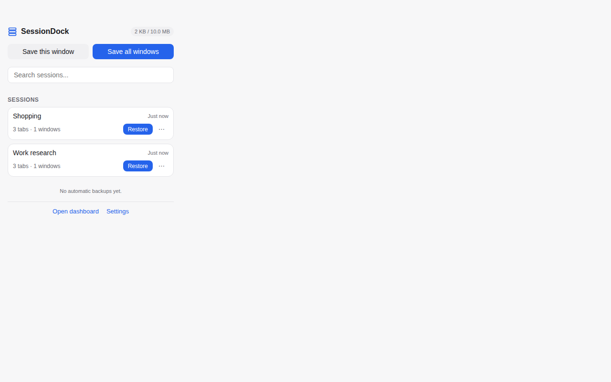
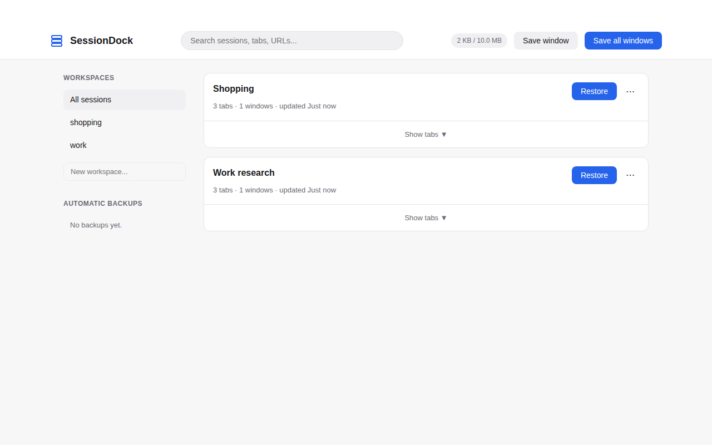
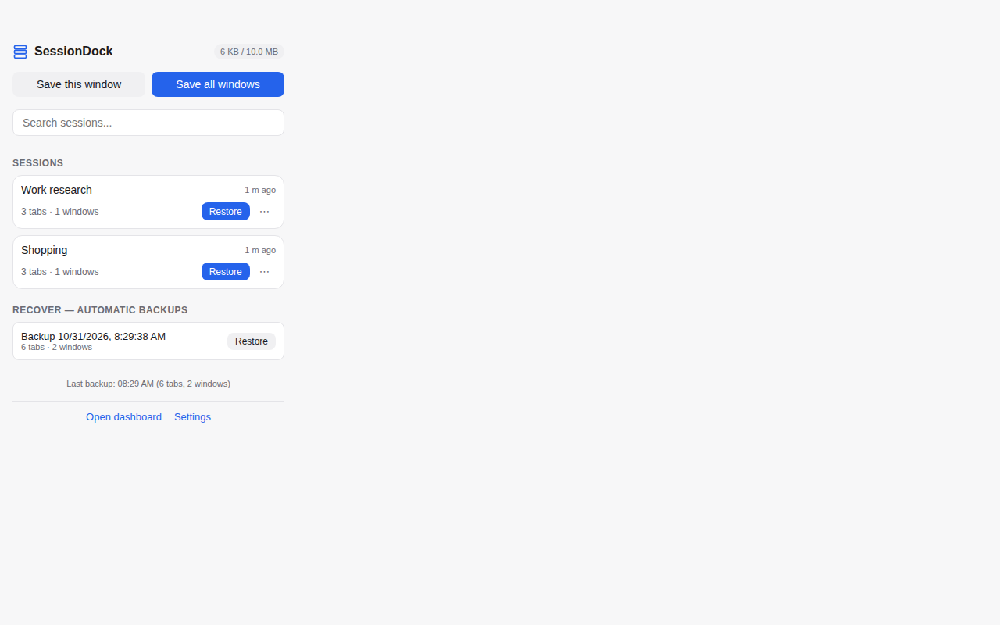
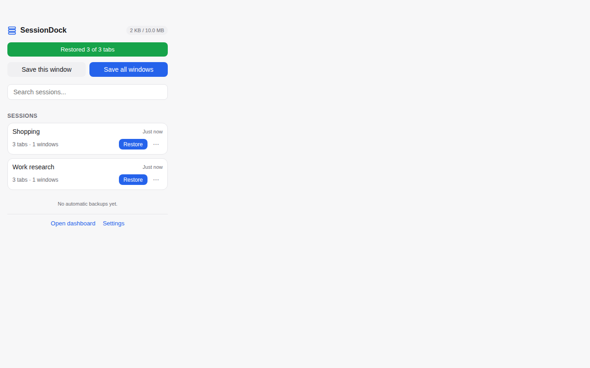
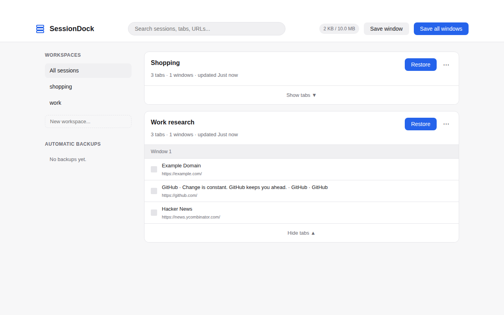

Never lose a tab session again
SessionDock saves your open tabs as named sessions and workspaces, and restores them in one click — exactly as you left them. Automatic backup means a saved session is never lost.
Add to Chrome — FreeFree. No account, no server, no analytics, no advertising. In review at the Chrome Web Store — the listing goes live once Google approves it.
What SessionDock does
A tab session manager that does one job, and does it honestly.
Save any window in one click
Save your open tabs as a named session — same order, same pinned tabs, same tab groups with their names and colours.
Restore exactly as you left them
Restore a session in a new window or your current window. After every restore you get an honest report: how many tabs came back, and which were skipped and why.
Workspaces
Keep sessions organised — Work, Research, Shopping — each session lives in one workspace.
Automatic backup
Your open tabs are snapshotted every few minutes (you choose how often). A snapshot is only written when something changed, and the last good copy is never overwritten — if a backup is ever damaged, SessionDock falls back to the previous good one and tells you.
Everything stays on your device
No account, no server, no analytics, no advertising. The popup always shows the last backup's real time and tab count — the stored snapshot is the truth, never the schedule.
Export & import
Export your sessions as JSON any time; import them back the same way.
Screenshots
Real captures of SessionDock running in Chrome.





How it works
Three steps, no setup, no account.
Save
Click the SessionDock icon and save the window's tabs as a named session, in a workspace of your choice.
Close the window
Free the memory. Automatic backup keeps snapshotting your tabs in the background.
Restore
One click brings the tabs back exactly as you left them — and tells you honestly what came back.
Frequently asked questions
Is SessionDock really free?
Yes. Free, with no payments and no subscriptions. Version 1 has no paywall of any kind.
Does it sync my tabs to the cloud?
No. Everything stays on your device. There is no account, no server, and no sync in version 1.
What data does it collect?
None leaves your device. SessionDock stores tab URLs, titles and tab-group state on your device so it can save and restore them. No analytics, no advertising. See the privacy policy.
What happens if a restore can't bring a tab back?
You get an honest report: how many tabs came back, and which ones were skipped and why — for example, browser pages that cannot be reopened.
Can I export my sessions?
Yes. Export your sessions as JSON any time, and import them back the same way.